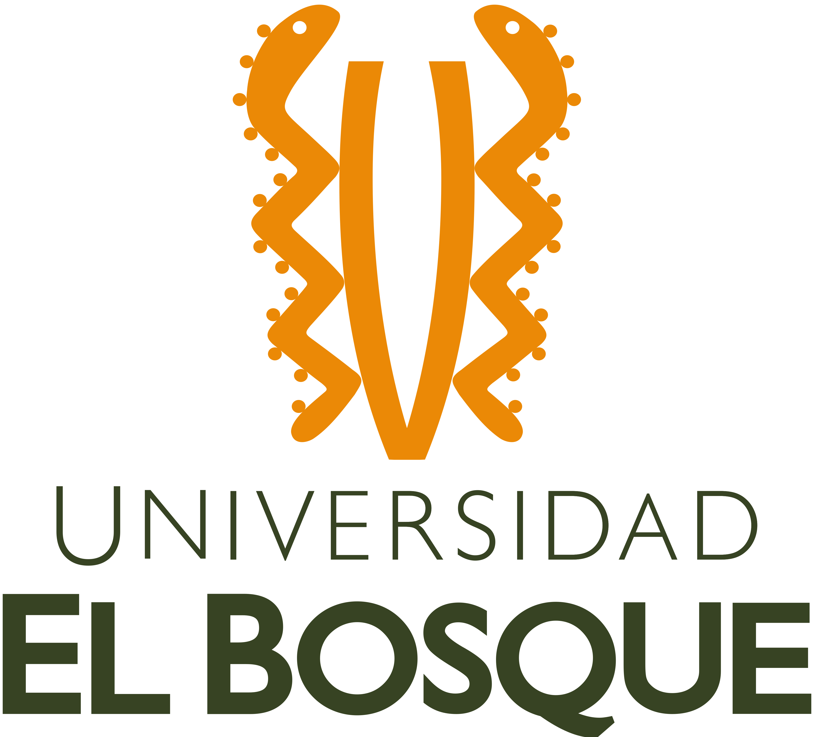

Creador Digital profesional
Universidad El Bosque
profesional altamente versátil y demandado en el escenario laboral digital. Con habilidades especializadas en diseño digital, desarrollo web, animación 3D y estrategias de contenido. Expertos en UX/UI y diseñadores de interfaces atractivas para aplicaciones y sitios web.
